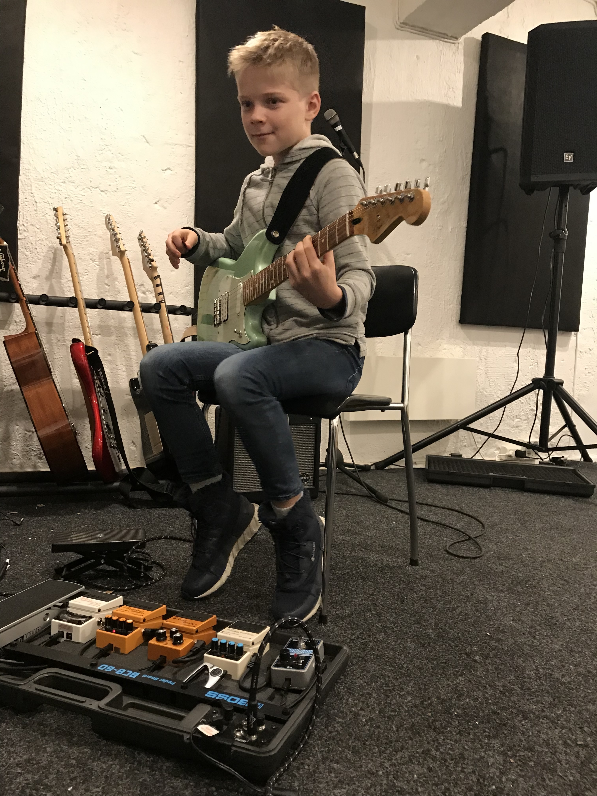
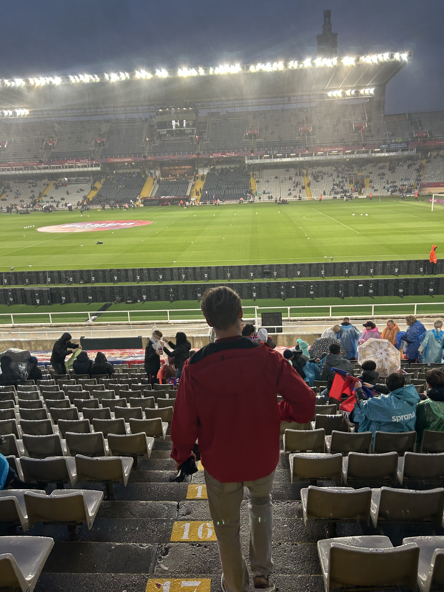

Mine Interesser
Musikk
Jeg elsker å høre på musikk, spesielt rock og pop. Musikk hjelper meg å slappe av og gir meg energi. Når jeg var rundt 10 år, så spilte jeg i band hos Oslo Rock School. da spilte jeg både gitar og sang på cosmopolis. Det er noe jeg nå ikke hadde turt, men noe jeg er veldig glad for at jeg gjorde
Fotball
Fotball er min favorittsport. Noe som ikke passer helt med det at jeg sluttet å spille fotball på lag når jeg var 8 år. Det er noe med fotball som jeg liker veldig godt. jeg elsker også fotballspillet Fifa, og har hatt en god del av de ulike spillene gjennom årene. Min favoritt klubb er Liverpool fc eller Barcelona fc.
Reising

Jeg elsker å utforske nye steder og kulturer. Reising gir meg muligheten til å oppleve verden på en unik måte. Jeg og familien min har dratt på mange reiser til utlandet, den mest minnbare er nok turen til bali. Da var vi i Bali i hele tre uker, det bildet her er et av mange bilder fra bali, flere slike bilder kan du se i ferier seksjonen av denne nettsiden.